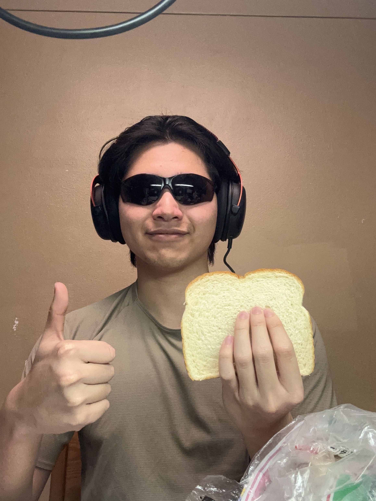

<link rel="stylesheet" href="{{ '/css/aboutPage.css' | relative_url }}">

<section class="top-block-section">
    <div class="about-me-container">
        <div class="img-storing-block">
            <div class="img-chunk">
                
            </div>
        </div>
        <div class="about-me-description-block">
            <h2 class="about-me-section-heading" > More About Me</h2>
            <div class="about-me-underline"></div>
            <div class="more-about-me-text-chunk">
                <p class="text-chunk">
                    Hey! I'm Quoc Bao Dang (a.k.a. Brandon Dang), a sophomore
                    Computer Science student at Kent State University. My
                    journey with technology
                    began around the end of my highschool years when I was into
                    making video games on my own and started participating in
                    some small Game Jam on itch.io. Although, recently I am a
                    bit busy with classes, I still have the passion for creating
                    games.
                </p>
                <p class="text-chunk">
                    I really into developing games, especially good games. Also,
                    I love to learn different programming languages.
                </p>
                <p class="text-chunk">
                    Beside of programming, I can speak English, Vietnamese, and
                    currently I'm learning Japenese. Additionally, I also do
                    digital artworks. For some reason, these have taught me
                    discipline and perservance, skills that perfectly help me in
                    my programming experience.
                </p>
            </div>
        </div>
    </div>
</section>